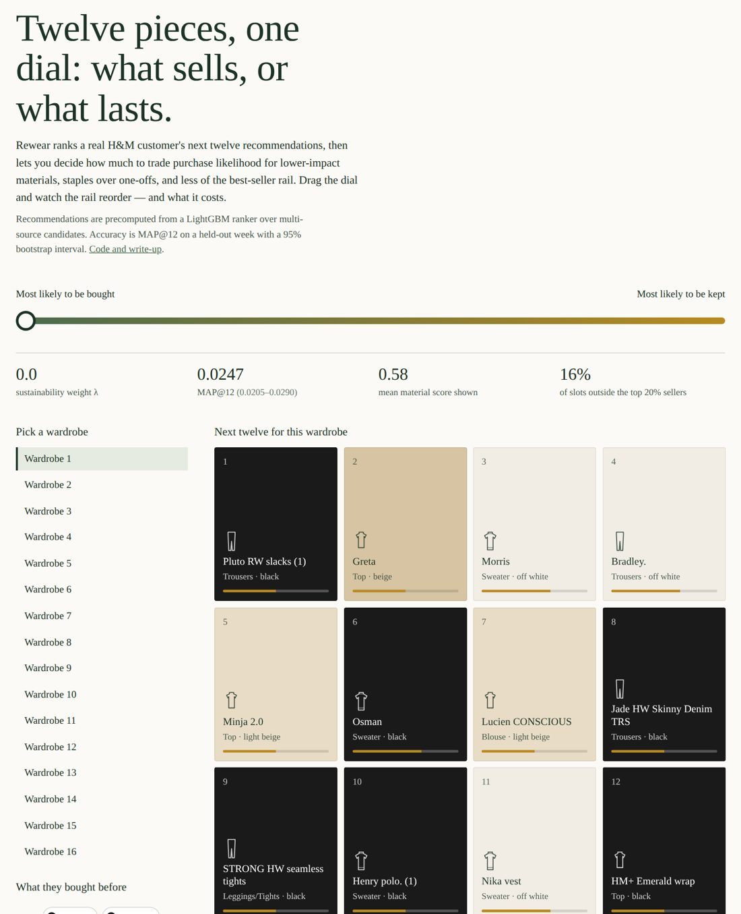
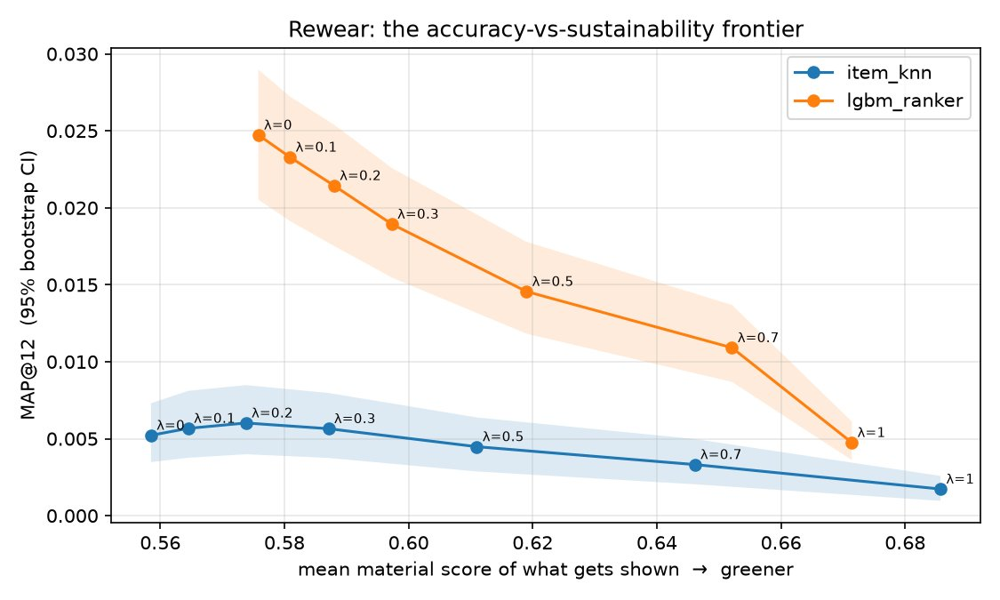

The problem
Fashion recommenders almost always optimize one thing: the next purchase. Rewear asks a different question: which pieces will earn a place in your rotation?
The standard pipeline generates candidates, ranks them by predicted purchase probability, and shows the top 12. Rewear adds one step: it reranks by a sustainability score using a single dial (λ), then reports exactly what that dial cost in accuracy.

The sustainability score
Material score
Fibre impact parsed from product descriptions. Organic cotton, linen, and recycled fibres score up; virgin polyester and acrylic score down.
Wear-again score
A “becomes a staple” signal: how often buyers in a category come back for more of it.
Popularity penalty
Fast-fashion churn. Chasing best-sellers is what the industry already does well without help.
Beyond accuracy
Every model is scored on MAP@12 plus catalogue coverage, novelty, and long-tail exposure.
Approach
Phase 1, baselines. A leak-free temporal split with the final week held out, popularity and time-decayed item-kNN baselines, and a full metric suite.
Phase 3, learned ranker. Candidates are pooled from four sources (repurchase, item-kNN, content similarity, and popularity) and ordered by a LightGBM LambdaRank model trained on a separate two-window split to avoid leakage.
Phase 4, uncertainty. A single MAP@12 on 2,590 customers is noisy, so every point on the λ sweep gets a 95% bootstrap interval from resampling customers.
Results
| Model | MAP@12 | Coverage | Novelty | Long-tail exposure |
|---|---|---|---|---|
| LightGBM ranker | 0.02473 | 0.0605 | 4.55 | 0.16 |
| Popularity | 0.00810 | 0.0002 | 4.98 | 0.17 |
| item-kNN + Rewear (λ = 0.2) | 0.00602 | 0.2473 | 7.98 | 0.73 |
| item-kNN | 0.00522 | 0.2501 | 8.02 | 0.74 |
The ranker beats popularity by roughly 3x, and its 95% interval (0.0205 to 0.0290) doesn’t overlap popularity’s. A surprising Phase 1 result: a light sustainability rerank (λ = 0.2) improved item-kNN accuracy by 15%, as the wear-again and material signals regularized a noisy collaborative signal.
The trade-off, made visible
For the learned ranker, λ = 0 is already the most accurate, so accuracy declines steadily as sustainability weight rises. That knee in the curve is a product decision, and this makes it one you can see.
Drag the dial: how much accuracy does sustainability cost?
λ = 0.0
External validation
On Kaggle’s leaderboard for this dataset, a silver-medal solution (45th of 3,006 teams) scores roughly 0.0292 to 0.0300. Rewear’s internal score of 0.0247 falls in a comparable range, though it’s measured on its own held-out week, not Kaggle’s official test set.
Responsible AI check
Trade-offs are explicit. Instead of hiding sustainability inside a black-box score, a single dial shows exactly what each step toward greener recommendations costs, with uncertainty on every point.
Honest about what the model learned. The top ranking features are recency and repurchase history, not the sustainability signals. The write-up says so rather than overselling the green features.
Stated limits. Nobody can observe “wear,” so wear-again is a category-level repurchase proxy. Material scores come from marketing copy and are easy to fool. One global λ is blunt; production would learn it per user.